In this lesson you will learn
|
Why a new language?
In lesson L0.4 we saw Einstein's idea: gravity is the curvature of spacetime. To do calculations with this idea, physicists need a way to describe curved spaces precisely. The key tool is the metric: a rule that tells you the distance between two nearby points.
This lesson introduces just enough of the mathematics to understand how cosmologists write down the geometry of the universe. No calculus beyond small differences is needed.
Distances on a flat sheet
On a flat sheet of paper with coordinates  and , Pythagoras gives the distance
between two nearby points:
and , Pythagoras gives the distance
between two nearby points:
In polar coordinates
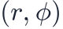
the same flat space looks different: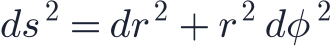
The coefficients in front of
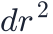
and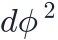
change, but the geometry does not. A metric encodes geometry independently of the coordinates you choose.Distances on a sphere
On a sphere of radius  , using the polar angle
, using the polar angle  and longitude :
and longitude :
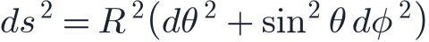
The factor says that circles of latitude shrink towards the poles. No choice of coordinates can turn this into the flat metric: the sphere is intrinsically curved. An ant living on the surface could detect it by measuring triangles (lesson L2.5).
Try it: Curvature Visualizer Compare triangles on a sphere, on a plane and in hyperbolic space, and read how much their angle sums differ from 180°. |
Spacetime: adding time with a minus sign
Special relativity (1905) combines space and time. In flat spacetime, the Minkowski metric is
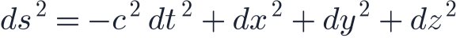
The minus sign in front of time changes everything:
- : the two events can be connected by something slower than light. The
proper time
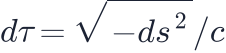
is the time measured by a clock travelling between them. 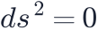
: the events are connected by a light ray. These null directions form the light cone.- : the events are too far apart in space for any signal to connect them.
The light cone Every event has a future light cone (all places light can reach from it) and a past light cone (all events that can have influenced it). Nothing travels outside the light cone. In an expanding universe the light cones bend, which produces the horizons of lesson L2.6. |
Geodesics: the straightest possible paths
On a curved surface there are no truly straight lines, but there are geodesics: paths that are locally as straight as possible, like great circles on the Earth that aircraft follow.
General relativity states:
- Free particles (feeling no forces other than gravity) follow timelike geodesics: the paths that make their proper time as long as possible.
- Light follows null geodesics, with everywhere along the path.
Gravity is not a force pulling objects off straight lines; objects simply follow geodesics of curved spacetime.
Clocks in gravity Near a mass, the time part of the metric is multiplied by 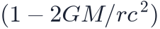 . Clocks closer to the mass tick more slowly. For GPS satellites this general-relativistic effect makes their clocks run about 45 microseconds per day faster than clocks on the ground, while their orbital speed slows them by about 7 microseconds per day. Without correcting the net 38 microseconds, GPS positions would drift by kilometres each day. |
Einstein's field equations
What decides the curvature? Einstein's field equations, published in 1915:
- is the metric, a 4 × 4 table of numbers describing distances in spacetime.
- , the Einstein tensor, is built from derivatives of the metric and measures curvature.
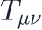
, the energy–momentum tensor, describes the density, pressure and flow of matter and energy.- is the cosmological constant.
The indices run over time and the three space directions, so this is really ten coupled equations. "Matter tells spacetime how to curve" is the right-hand side acting on the left.
The metric of the universe: FLRW
The cosmological principle (lesson L1.3) is extremely restrictive. A spacetime that is homogeneous and isotropic at every moment must have the Friedmann–Lemaître–Robertson–Walker metric:
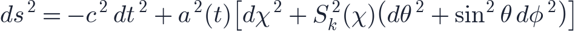
Here:
- is cosmic time, measured by observers moving with the expansion;
 is the scale factor (lesson L2.1);
is the scale factor (lesson L2.1); is the comoving radial distance, and
is the comoving radial distance, and 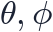
are directions on the sky;- encodes the curvature of space:
| Geometry | Two-dimensional analogue | |
|---|---|---|
| Closed ( 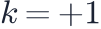 ) |
sphere | |
| Flat ( |
plane | |
| Open ( 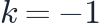 ) |
saddle |
One function and one number The whole geometry of a homogeneous, isotropic universe is fixed by the function |
Reading physics from the metric
Light and redshift. For light moving radially, gives . The comoving distance travelled is
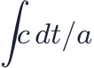
, the particle horizon formula of lesson L2.6. Two wave crests emitted a time apart arrive apart, which is exactly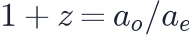
.Angular sizes. An object of size  at comoving distance
at comoving distance  spans an angle
: the angular diameter distance of lesson
L2.7 with the curvature built in.
spans an angle
: the angular diameter distance of lesson
L2.7 with the curvature built in.
Conformal time. Defining turns the flat FLRW metric into : Minkowski space multiplied by an overall factor. Light then moves at 45° in an
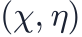
diagram.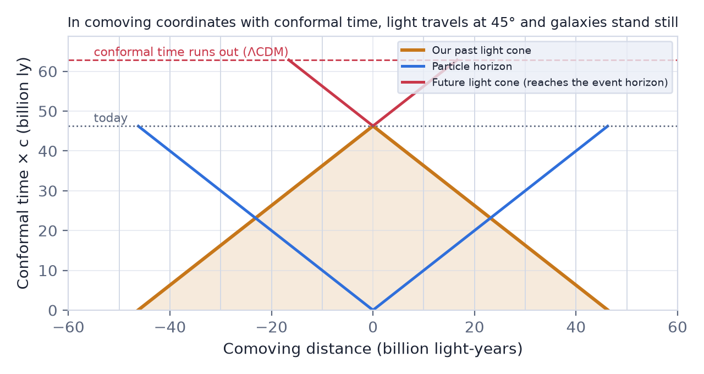
Try it: Spacetime & Horizon Diagram Switch the spacetime diagram between proper distance, comoving distance and conformal time. Watch the light cones straighten out. |
Remember this
|